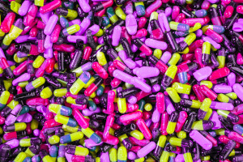

Чи ефективні пробіотичні препарати?
Практично кожен науковий і не дуже огляд на тему пробіотиків починаються із згадок про Іллю Мечникова (і ми зробимо те ж саме), який вперше заговорив про йогурти та лактобацили як можливе пояснення довгожительства регіону Болгарії. А в 73-му з подачі канадського уролога Ендрю Брюса науковці та медики масштабно заговорили про пробіотики вагінального призначення. Якесь зібране до купи визначення пробіотикам дав Рой Фуллер у 1989, назвавши їх "живими мікроорганізмами, які при вживанні в адекватних кількостях здійснюють позитивний ефект на макроорганізм, покращуючи баланс кишкової мікробіоти". Ось десь так варто розуміти це магічне слово "пробіотик".
Сучасний світ пробіотиків ступив далеко за межі "лактобацил-біфідобактрій" як у видовому різноманітті, так і в області застосування. Окрім традиційних йогуртів, квашеної капусти та пігулок з лактобацилами після курсу антибіотиків, існують вагінальні пробіотики, засоби догляду за шкірою, чи, наприклад, морозиво або ж навіть миючі засоби для догляду за оселею. Справедливо зауважити, що "пробіотичність" деякої такої продукції – не більше як фантазії маркетологів, що іноді зі шкіри лізуть, аби бути в тренді. Але, не без правди – поряд із просто "трендовими фішками" є й засоби, які справді мають ефективність.
У цьому невеличкому огляді – те, що стосується пробіотичних препаратів, які мандрують до нашого кишківника.
Говорячи про сучасні пробіотичні препарати, треба сказати, що переважна їх більшість включає в себе молочнокислі бактерії та біфідобактерії. Однак бувають і препарати на основі спорових мікроорганізмів (бактерії роду Bacillus ), дріжджів та навіть кишкової палички . Спорові пробіотики та деякі дріжджі проявляють виражений антагонізм по відношенню до багатьох кишкових інфекцій і тому часто є чудовою альтернативою антибіотикотерапії.
Як "вони" це роблять?
Пробіотичний ефект може реалізуватися багатьма шляхами. І, чесно сказати, далеко не всі механізми наразі з'ясовані та продовжують бути предметом палких суперечок між дослідниками. Найчастіше говорять проантагоністичну дію пробіотичних штамів – вони продукують молочну кислоту та антимікробні речовини (дуже різні: від різноманітних пептидів до антибіотичних речовин типу нізину, або ж просто пероксиду водню). Тобто все відбувається, як у традиційному американському фільмі: всесвіт (кишківник) потерпає від поганців (якогось стафілокока чи іншого патогенного чи умовно патогенного мікроба), але приходять хороші хлопці (пробіотики) і перемагають поганців (а протимікробні пептиди – типу як гранати). Або ж настає апокаліпсис (прийом антибіотиків), а після нього смутні повоєнні часи (антибіотико-асоційована діарея), де "хороші розумні хлопці" (пробіотики) знову будують хмарочоси (відновлюють наш "кишковий добробут").
Окрім того, деякі пробіотичні мікроби вміють синтезувати купу таких собі молекулярних "ключиків" , які можуть налаштовувати роботу нашого організму на потрібний лад, наприклад, зменшувати прояв алергічної реакції чи запалення. Або ж включають свої ферменти і, наприклад, розщеплюють холестерин, який не повертається із кишківника у наш кровообіг.
На сьогодні є дискурс про те, чи такі ефекти завжди спричинені саме грунтовною зміною нашого мікробіому. Бо багато досліджень справді говорять про відсутність змін видового складу мікробіому при вживанні пробіотичних препаратів. Також є дослідження, які говорять про те, що зміни, які стаються, мають місце в тонкому кишківнику, а не в досліджуваній аліквоті "на виході", яку ми звикли нести на аналіз.
Існує також думка, що лікувальний ефект може здійснюватися саме за рахунок тимчасової дії метаболітів бактерій, що застосовуються, і що цього достатньо для налагодження мікробного гомеостазу.
Ну і, звісно, пробіотики схильні заповнювати звільнені екологічні ніші в нашосму кишківнику після дії антибіотиків, що само собою запобігає розвитку інших патогенних мікроорганізмів.
Ефективні чи не дуже?
Невдалий заголовок однієї із статтей, опублікованої BBC, де пробіотики було названо 'quite useless' (на основі лише одного дослідження, у ході якого виявлено, що далеко не всі і далеко не завжди пробіотичні штами приживаються у кишківнику пацієнтів), додало масла у вогонь на хвилі холівару за доказову медицину і тренду скептицизму.
По-перше, як ми вже щойно згадували, ефективність пробіотичних препаратів може не завжди безпосередньо залежати від їх "прописки" в наших кишківниках.
По-друге, наші кишкові мікробіоми дуже різні і справді не завжди радо зустрічають новоприбулих гостей із "хлібом-сіллю" та готові ділитися з ними житлом та харчем.
А, по-третє , говорити, що всі пробіотики неефективні, або також що всі ефективні – все одно, що сказати, що всі люди добрі, або всі люди злі. Бо це живі організми. Як і ми.
Далеко не всі використовувані штами у пробіотичних препаратах є однаково потужними та взагалі дослідженими. За детальними масштабними дослідженнями стоять масштабні витрати. Пересічний мінімальний спектр таких досліджень включає ідентифікацію, дослідження безпечності на тваринах (привіт зоозахисникам)та людях, здатність виживати в умовах шлунково-кишкового тракту, здатність адгезуватися до епітеліальних клітин та проявляти хоч якусь антагоністичну активність хоч до якихось патогенних мікробів, а також - оптимізацію процесів напрацювання біомаси та виживання мікробних клітин в умовах висушування протягом терміну зберігання . Ось це все вже тягне на чималий бюджет. Додаємо сюди клінічні дослідження ефективності при діареях різної етіології у різних вікових груп, алергіях, підвищеному холестерині та інших бажаних випадках, аналіз на відсутність мобільних генів антибіотикорезистентності, і отримаємо бюджет якоїсь невеличкої острівної держави. Відповідно, далеко не кожна упаковка пробіотичного препарату справді містить всебічно досліджені штами із доказаною ефективністю.
Тому пробіотик від пробіотика дуже відрізняється – і за складом, і за ефективністю.
Що кажуть наукові дослідження?
Традиційно пробіотики успішно застосовуються при кишкових негараздах різної етіологі, в тому числі, при інфекційних захворюваннях та антибіотикотерапії. Аналіз тридцяти трьох досліджень (~6 тис пацієнтів) показав помірний протективний ефект пробіотиків при антибіотикоасоційованих діареях , а також скорочення її тривалості при застосуванні в дозах більше 5 *109). Особливо успішними є результати широко відомого штаму Lactobacillus rhamnosus GG (LGG). Цікаво, що при діареях, спричинених Clostridium difficile найефективнішими були препарати, що містили лактобацили Lactobacillus casei.****Дріжджі Sacharomyces boulardii , та лактобацили виду Lactobacillus reuteri теж визнаютьсяяк ефективні при антибіотикоасоційованих діареях.
Суперечливі дані про ефективність пробіотиків при запальних хворобах кишківника (Inflammatory bowel disease (IBD)). Хоч деякі пробіотики вели до ремісії у випадку виразкового коліту , автори огляду не схильні очікувати на істотне покращення при застосування пробіотиків у випадку хвороби Крона.
Показаноефективність штаму Lactobacillus rhamnosus GG*** (LGG) у запобіганні атопічного дерматиту при прийому вагітними та в перші півроку – немовлятами. Цейзахисний ефект мав доволі пролонговану дію.**Однак, справедливо сказати, що така гарна чітка картина була лише у дослідженнях дії штаму Lactobacillus rhamnosus* GG (LGG), метааналіз ефективності ширшої вибірки пробіотичних штамів не показав існування загального однозначного лікувального ефекту.
Аналіз 22 досліджень (більше 3 тис пацієнтів) показав неефективність пробіотиків при закрепах у дітей.
Аналіз 25 досліджень із залученням більше 4 тис пацієнтів демонструє справді високий рівень ефективності пробіотиків при застосуванні у недоношених немовлят (менше 37 тижнів та менше 2500 г). Це відображалося на скороченні ентерального вигодовування та ефективнішому наборі маси . А також спостерігався виражений протективний ефект пробіотиків у запобіганні розвитку некротичного ентероколіту та сепсису.
13 досліджень із залученням більше 2 тис пацієнтів показують підвищення ефективності антихелікобактерної терапіїпри поєднанні її із вживанням пробіотиків. У дослідженнях навіть вказується на деяку видоспецифічність отриманої ефективності.
Чимало гарних результатів було отримано, застосовуючи пробіотичні препарати в галузі гінекології . Вагінальні пробіотики демонструють ефективність у боротьбі із бактеріальними та грибковими вульвовагінозами та знижують частоту інфекційних рецедивів.
Не зважаючи на останні дослідження залученості кишкового мікробіому в етіологію різних нервово-психічних розладів, поки не виявленолікувальної дії існуючих пробіотичних препаратів на симптоматику аутизму у дітей.
Також поки не вдалосяотримати успішні результати при застосуванні пробіотиків при лікуванні пацієнтів із шизофренією.
Чого слід очікувати в найближче десятиліття?
На даний час (2019) на ринку справді ще немає пробіотичних препаратів із доказаною ефективністю для лікування психічно-нервових розладів типу депресивних станів, шизофренії, аутизму. Однак є всі передумови для того, щоб вони таки з'явилися.
Існують також дані про деякі штами та їх композиції, що ефективно сприяють зниженню холестерину. Тому скоро у статинів з'являться нові конкуренти.
Дослідження на тваринах показують кардіопротекторну дію Lactobacillus rhamnosus GR-1. Це теж скоро призведе до появи нових препаратів у кардіології.
Ще одним цікавим багатообіцяючим напрямком може бути створення пробіотиків із детоксикаційними властивостями. На сьогодні є дослідження, які показують здатність деяких штамів запобігати всмоктуванню важких металів, афлатоксину та інших отрут.
Очікувано також, що видовий спектр застосовуваних штамів буде розширюватися далеко за межі лактобацил-біфідобактерій. На арену пробіотиків виходять нові й нові види мікроорганізмів. Серед них, наприклад, Akkermansia muciniphila, яка творить такі дива з метаболізмом та імунітетом, що продавці таблеток для схуднення вже в очікуванні потирають руки і прицінюються до дач на Мальдівах.
Чи варто приймати пробіотичні препарати та як обрати справді ефективний пробіотик?
Ми утримаємося від конкретних рекомендацій – це обов'язок Вашого сімейного лікаря. Ми можемо лише зауважити, що просто так "для профілактики" споживати пробіотичні препарати не варто. Якщо "там" все працює – нехай собі працює, не треба заважати. Але якщо є показання і Вам таки необхідно зупинити свій вибір на якомусь із препаратів, то зверніть увагу на наступне:
Дозування. Наукові дослідження вказують на те, що виражений лікувальний ефект пробіотичного препарату можливий при дозуванні не менше 109 мікробних клітин на дозу.
Повна назва штамів. Ті виробники, які справді мають чим похвалитися, завжди пишуть не просто "лактобацили-біфідобактерії" чи навіть латинь, а вказують назви і номера штамів. Для просунутого споживача це можливість "забити" цей номер в "пабмед" і почитати про таланти і досягнення саме цього штаму. Таким чином власне можна звірити перелік зазначених показань із тією самою "доказовою базою".
Виробник. Важливо, щоб зазначений на упаковці виробник, був все таки фармкомпанією із гарною репутацією, а не кустарним БАД-генератором, який, можливо, ніколи навіть не чув про існування стандартів GMP. Це не лише питання ефективності, а й банальної, але дуже важливої безпечності, адже при виробництві мікробних препаратів крайнє важливими є якісна сировина та ретельний мікробний контроль на всіх етапах.
Здорові будьте!

Photo by JOSHUA COLEMAN on Unsplash